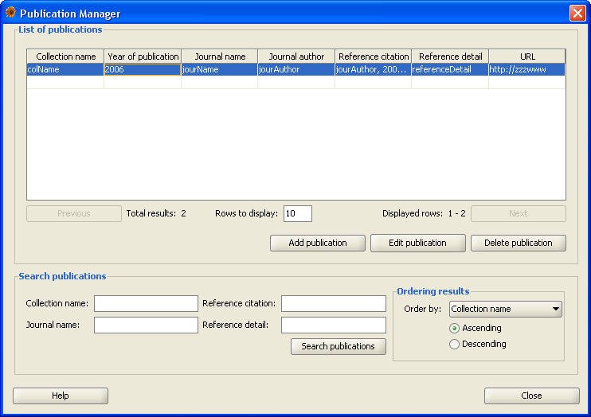
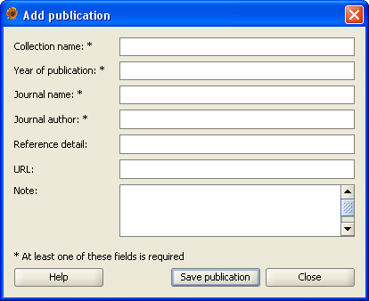

Publication manager
Publication manager allows users to add, search, modify and delete publications where the occurrence records were published.
It can be invoked from menu Data|Publication Manager.
The Publication Manager window consists of two main parts:
- The list of publications - where the results of the search are displayed
- The search criteria - where you can specify search parameters for publications

The list of publications
After a succcessful search results are displayed in the list of publications, although not all of them can
be seen immediately. Initially, only the first page of the results is displayed. To see the rest
of the pages use Next and Previous buttons which can be found directly under the list.
In case you would like to display more publications per page, input the requested number of publications to the
field below the list of publications.
This part also includes buttons for adding, editing and deleting publications. The Add publication and
Edit publication buttons open the Add/Edit Publication Dialog (see below), the Delete publication
button removes the publication after the confirmation. When Edit or Delete
button is pressed, publication must be selected in the list in order to proceed with the operation
(otherwise the system will warn you that there is no publication selected). Adding and editing publications
is subject to the system of rights in plantlore. For more information on this topic, see the
appropriate help section.
The search criteria
Publication manager allows users to search the data using 4 parameters: Collection name, Journal name,
Reference citation and Reference detail. Results can be ordered by Collction name, Publication year,
Journal name, Journal author, Reference citation and Reference Detail in either
ascending or descending direction. Search string for any of the parameters doesn't have to match
the item in the database exactly and any substring will be sufficient (although it might yield more
results). To start searching use Search publications button.
The search is by default case insensitive.
After the manager window is opened, all available publications are displayed. If you've executed a search
but you want to display and browse all available publications again, press the Search publications
button while all of the search fields are left blank.
Window for adding new publications can be opened from the main Publication Manager window using Add
publication button. This window contains the following fields:
- Collection name - Name of the collection this publication belongs to. Maximum size of this item is 255 characters.
- Publication year - Year when the occurrence was published.
- Journal name - Journal name where the occurrence was published. Maximum length of this item is 255 characters.
- Journal author name - Author of the journal where the occurrence was published. Maximum length of this item is 255 characters.
- Refernce detail - Reference detail for the publication. Maximum length of this item is 100 characters.
- URL - URL pointing to the publication. Maximu length of this item is 100 characters.
- Note - Any other information about the publication. Maximum length of this item is 4096 characters.

New publication can be saved using the Save publication button in the bottom of the window. At least one of the following items has to be present: Journal author, Publication year,
Journal author name, Collection name.
In case you edit already existing publication, all of the items are preloaded with the current parameters of the publication and you can modify them. You can save the modifications by
pressing Save publication button. Same as when creating new publication, at least one of the following items has to be present: Journal author, Publication year, Journal
author name, Collection name.